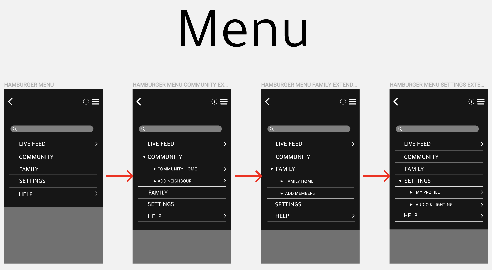

MY PROCESS JOURNAL
Introduction
Throughout this semester, we as a group have researched, conducted design methods and user research, and created concepts for our brief of assisting people in interacting with autonomous vehicles in future cities. Our team decided to focus on Home Security as our problem scenario as we saw several opportunities to innovate and iterate ideas and concepts. This online journal documents the salient aspects of our group’s design process throughout this semester. The journal is split up into four sections in order to reveal the evolution of our process from the very beginning of our research, to our current concept. These sections are:
Background Research: This section highlights the initial research we conducted for finding our problem scenario of home security.
Elaboration: This covers further research and methods we used in order to gain a deeper understanding into our problem scenario.
User Research: Throughout this section, we tested our prototypes on users to gain feedback and seek opportunities to further iterate and improve our interfaces.
Synthesis: A reflection of our entire process will be included in this section.
1. Background Research
WEEK 1-2: INITIAL RESEARCH
In week 1 we conducted our initial research into autonomous systems, devices, and vehicles so that we could gain interesting insights to the current technology of autonomous things.


We also brainstormed potential problem scenarios that we could pursue. As a group, we originally were content with proceeding with the topic of health. However, throughout the week, our group struggled to find a specific problem scenario regarding health and decided to choose a different topic. In week 2 we continued to brainstorm and finally came to the decision of home security. ADD IDEAS MIND MAP
This topic was relatable to all of us and we saw that there was potential to gain insightful feedback from users and create an interesting autonomous vehicle. We also created our first interview and questionnaire questions that were based on general questions about home security. Each of us went out individually to conduct these interviews and questionnaires from different users. ADD INTERVIEW AND QUESTIONNAIRE QUESTIONS
WEEK 3: INTERVIEW AND QUESTIONNAIRE FEEDBACK
We gathered our data from our interviews and questionnaires and identified key themes: Fences were the most popular type of security and safety depends on what kind of environment people live in. However, from our tutor’s feedback, all our individual data we collected was too similar and therefore we weren’t able to gain a vast amount of data due to us using the same interview and questionnaire questions. Due to this, we decided to conduct another set of interviews. Our group also aimed to focus on more specific target audiences individually. One member interviewed people living in houses, the other interviewed people living in sharehouses, and I conducted interviews with people living in apartments. Each of us came up with our own interview questions so that we each obtain different data and expand our knowledge of home security in different types of homes.
WEEK 4: FEEDBACK FROM OUR INDIVIDUAL INTERVIEWS
After conducting our individual interviews, some of the key themes we found from all data was relationships with neighbours, privacy, noise level, a presence in the home, and people preferred living in houses. These ideas were further explained in my research report. KEY FINDINGS MINDMAP/SUMMARY OF OUR RESEARCH MINDMAP
We presented our research reports in class and the main points of feedback I received were: Continually justifying why I did things, for example, why did I ask the questions I asked to users? What did I learn from the insights I gained?
2. Elaboration
WEEK 5: BEGINNING OUR IDEATION
From the feedback we as a group all received from the reports, we reminded ourselves that we also have to justify our actions and decisions. We decided to focus on people living in houses as we believed that there were more opportunities to create concepts due to the fact that houses are generally larger and require more security than sharehouses and apartments. We analysed our research reports and discovered that ‘a presence in the home’ was an effective aspect in security within the home. We linked this combined this discovery with the idea of ‘scaring the burglar’. The goal of this idea was to completely deter burglars from even entering the home. Mind map IMAGE
After our brainstorm, we came up with four initial concepts:
‘Roomba’ concept: An autonomous drone that firstly replicates the user’s presence in the house while they are away to make it look like the house is occupied, and secondly, to alarm the user if their house is being broken into whilst detering the threat with the use of alarms. The drone would patrol the house whilst playing audio such as dogs barking, conversation, or the sound of people doing everyday house tasks to replicate the feeling of someone being in the house. This no longer makes the house a viable option for intruders.
‘Flower’ concept: This ‘flower’ concept also focuses on the idea of camouflage. The flower will also act as decoration within the house. A camera will be installed into the flower to monitor the inside of the house. When a burglar intrudes the home, the flower will shine a bright flash of light and take a photo of the burglar. The goal of this light is to scare the burglar. The flower will also trigger an alarm and notify the homeowner via mobile phone about a potential threat in the house.
Beehive concept: The Autonomous Beehive Concept focuses on protecting the home through 24/7 surveillance of the surrounding home environment. The concepts envisions bee’s protecting the home by surveilling the home 24/7 and having the ability to autonomously detect if there is unidentified activity in their homes. The concept also has an app, which allows homeowners to view a live camera feed if there is unidentified activity and receive notifications/alerts.
‘Marbles” concept: This concept focuses on the idea of camouflage. This concept is quite futuristic as marbles do not have any propellers. A handful of marble drones will be kept inside a bowl and it will act as decoration in the house (in the image in page 14, the marble drones are placed on the coffee table). The drones will deploy from the bowl once the house is empty. The drones will fly around and monitor the inside of the house through the cameras implanted into them. If a burglar intrudes, the drones will sound an alarm and record the potential threat that is present in the home. The house lights are also connected to the drones and so when a burglar enters the home, all the lights in the house will immediately turn on to expose the burglar (this will be most effective at night).


WEEK 6: NARROWING DOWN TO TWO CONCEPTS
From our four initial concepts, we decided to iterate further on our ‘Roomba’ and ‘Beehive’ concepts. Regarding the Roomba concept, our group liked the idea of a drone monitoring the inside of the house without anyone home. Same idea with the Beehive concept except, the drones are monitoring the outside of the house.
 INDOOR DRONE CONCEPT
INDOOR DRONE CONCEPT
We decided to choose our 'INDOOR DRONE CONCEPT' as we believed it suited our goal of “a presence in the home” so that burglars won’t even attempt to intrude in on the home. We believed that the outdoor concept was impractical as we came up with reasonings such as, “what if it starts raining? Where will the drones be kept when they are not deployed? What if the home is too close to the neighbours?” We liked the idea of a drone that produces audio whilst simultaneously monitoring the home as it was not only securing the house, but also creating a presence in the home.
WEEK 7: PAPER PROTOTYPES
We created two interfaces based on our indoor concept. We used paper prototypes to display these interfaces in order to show a skeleton version of what each interface would look like.
The App
We decided to name our interfaces “Terry”. We used a name because we wanted our interface to be more personal, as if “Terry” was the homeowner’s personal house security guard. The app’s main purpose is for it to be a platform of communication between the homeowner and the drone. The app will allow the homeowner to have instant connection with the drone at home so that they can receive live information on any activities that occur in the home. The drone will only deploy and start monitoring the house, once the homeowner has left the house and their phone is 50 metres away from the house. The app also gives the option for the homeowner to notify police of a potential threat in their home. Neighbours also have the option of installing the “Terry” App. If a house is getting burgled, the app will notify neighbours that there is a potential threat in their neighbourhood. The aim of this is to raise awareness for neighbours to be wary of their safety and be secure in the home. In the storyboard, a scenario is portrayed where a burglar breaks into the home and the app immediately notifies the homeowner.
App Paper Prototype

App Storyboard
 This scenario highlights what the app will do in the case a burglar breaks into a house.
This scenario highlights what the app will do in the case a burglar breaks into a house.
Smart Speaking System
For this interface, Terry is a smart speaking system (like Siri) that communicates with the user via talking. As a group we believed that simply speaking to Terry would be more natural and convenient for the user. This speaking system is also a platform of communication between the drone and homeowner. The drone will only deploy and start monitoring the house, once the homeowner has left the house and their phone is 50 metres away from the house. The smart speaking system will be integrated into any mobile device. Like the app, Terry will also give the option for the homeowner to notify police of a potential threat in their home. Neighbours will also be notified of any potential threats in their neighbourhood. Again, this is to raise awareness and safety in the area. In the storyboard, a scenario is portrayed where a burglar breaks into the home and the smart speaking system immediately notifies the homeowner.
Smart Speaking System Paper Prototype

Smart Speaking System Storyboard
This scenario highlights what the smart speaking system will do in the case of a burglar breaking into a house.Notification Screens
Both interfaces will be linked up to three users. The homeowner, neighbours and police.

3. User Research
WEEK 8 to MIDSEM BREAK: PAPER PROTOTYPE USER TESTING
For our user testing, we tested 9 participants in order to gain insightful feedback for our paper prototypes. We conducted three evaluation methods on the users:
CONTEXTUAL OBSERVATION
Description: Contextual observation is a method in which the users testing the product are observed from a distance to minimise the amount of interference. This allows users to test the product freely, without any form of interruptions making the actions the user does free of influence from the testers (us).
Why we chose this: This method of testing was chosen due to the fact that it allows users to have a large amount of freedom to discover how to use the product. It allows the designers to test the affordance of the product and how easy it is to use. If the product has good affordance, then the user would have no difficulty using the product which will be seen by the testers through observation. The product should be easy to use for a user who has had little to no influence of how to use the product yet has a lot of freedom in using it.
Guidelines:
· Explanation of each concept before testing
· During testing, explaining any points that the user is confused about
· Try not to interrupt the user whilst they are interacting with the interface
THINK ALOUD
Description: The think aloud method is a user testing method in which the users say their thoughts as they use the product. This allows testers to learn from what the user is thinking when they are using the product as well as their feelings and opinions. Instead of having the users think back and evaluate, the testers are given thoughts that have happened in the moments the user is using the product.
Why we chose this: Think aloud method was used in user testing to allow testers to gain the users initial feedback, opinions and thoughts whilst using the product. As a result, the testers are able to hear what the users are thinking without them having to ‘filter’ their thoughts.
Guidelines: User speaks through their experience of the concepts
A/B TESTING
Description: A/B testing is a method where two different versions of the same product are tested by the user. The two products are then compared after both being tested by the user. This allows for testers to determine which product better suits the users need. After both products are tested by the user, the user must answer certain questions which will help the testers find out which product is more suitable.
Why we chose this: A/B testing is an effective strategy for user testing as allows testers to compare two different iterations of the same product to decide which concept better suits the users needs. The questions also allow testers insights into advantages and disadvantages of each product, allowing for testers to further improve upon each concept, taking aspects from both prototypes. This will lead to a more effective prototype that will eventually lead to a successful, final outcome.
Guidelines: After testing both concepts, we ask them about, firstly their opinion on both, which one is their preference and why.
User Testing Feedback - Paper Prototypes

WEEK 9-10: WIREFRAMES
After discussing our feedback from our paper prototypes, our group decided to use Nielson's Heuristics to continue our analysis of our user testing feedback. We used this method as it helped us identify the key points that were common amongst the data collected from all user tests.

Chosen Concept
After finalising our analysis of our user feedback, we made the decision to pursue our 'App' concept. We believed that we had more opportunities to effectively iterate on this concept rather than the Smart Speaking System. The user testing feedback also provided us with important insights into new elements that need to be included, aspects of the app that need changing, and removing elements that are not useful.
Our Wireframes
From here, we created wireframes to further iterate our previous paper prototypes. We used sketch for our wireframes as it helped us create higher fidelity screens for our app.

User Testing of Wireframes
Again, we tested our wireframes by using Contextual Observations and Think Alouds in order to obtain feedback on our iterated concept. We tested on 8 participants and some were the same participants from our paper prototype testing.
WEEK 11-12: OUR INTERACTIVE PROTOTYPE
Working on our High Fidelity Interactive Prototype
Our group continued to iterate on the wireframes we had created. We transferred our prototype to Figma since this program allowed all of our group members to work on the prototype at the same time.
We iterated our interface even more by focusing more on the aesthetics of the app. As seen below, it reveals the progressive change and improvement the app underwent. We used the gradient blue background to create a clean and modern look to our app. We also blended it with a house illustration to keep with the topic of "home security".
We user tested our interactive prototype in order to gain more insight and feedback on our interface. We tested three users by using contextual observations and think alouds. The main points that we identified were:
· The need for confirmation when doing certain tasks on the app
· Needing more information about how to add members in the family and community sections
· Users liked the idea of being able to control the drone to move to other areas in the home
· Users were able to understand what most elements meant
· The Live Feed section was the section that users liked and were interested in
Prototype iterations
Our group continued to iterate on our interactive prototype by implementing the feedback we received from our user testing.
We included a "confirmation" tick, in order to give users reassurance of completing certain tasks within the app.
We also included more specific information on how to add certain members in the 'Community' and 'Family' sections. We used QR codes, for people to easily add a person and also giving users the option to add members manually into the app.
User Flows
These are our overall user flows of our entire 'Terry App' Interface

Interactive Prototype Walkthrough
Here is our current interactive prototype of our Terry App
Notification for Homeowner
Notification for Neighbours
Notification for Police
4. Synthesis
Throughout this semester, our group has learnt the importance of continuous interation in order to create an effective design. Our problem scenario of 'Home Security' has really pushed us to think outside the box and brainstorm about the most creative and practical ideas that will benefit people in this context. The creation of our 'Terry App' has shown us how far we've come in our design process and how our group has been able to use each other's strengths to create an autonomous drone that resolves the issues that are present in home security.